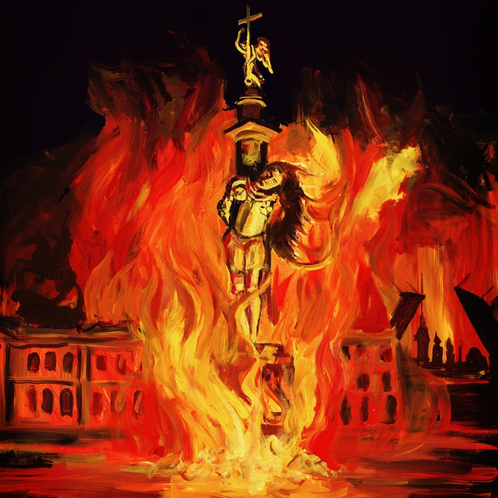
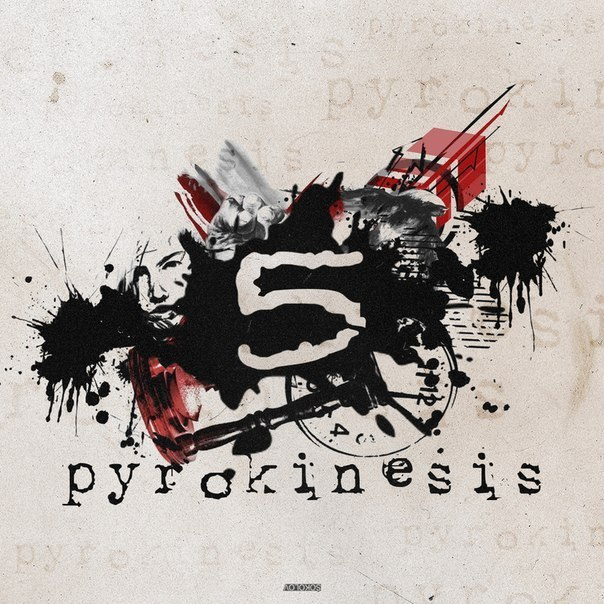
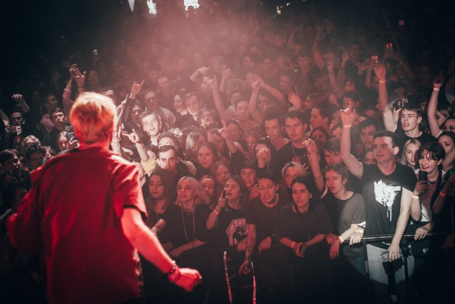

Pyrokinesis – популярный рэп и хип-хоп-исполнитель российского музыкального андеграунда. Начинал свой путь Андрей начал, когда учился в 11 классе. В биографии об Playingtheangel, мы уже упомянули некое объединение товарищей, в которое входил Pyrokinesis.
По сведениям артиста, свой псевдоним он взял исходя из особенностей своего характера и любви к огню. В образе огня артист видит две стороны: с одной — это разрушение и прах, с другой – жизнь, тепло, свет. Эта двойственность близка музыканту, который не в состоянии выбрать одну сторону, ту, которая была бы ближе по душе.
Отличительной особенностью песен является их структура и посыл. В своих треках он делает упор на текстовую составляющую, а также тщательно продумывает образы лирических героев. Сам Андрей заявляет, что в каждый свой трек и альбом вкладывает какую-либо идею, но при этом оставляет пространство слушателю для дальнейшего её осмысления.
В качестве финального результата — многословный и мрачный рэп с своеобразными интонациями, сложными образами и демонстрацией внутренних демонов.


В 2015 году он выпустил свою первую пластинку под названием«5».
В 2016 и 2017 вышли альбомы «Eclipse» и «Терновый венец эволюции», значительно повлиявшие на карьерный путь.
Самым популярным альбомов в творчестве является –«Питер, чай, не Франция».
Концерт Pyrokinesis проходил 25 сентября в ночном клубе РайON (в настоящее время имеет название – Face Club). По моему мнению данное место не особо подходит для проведения концерта, потому как, сам клуб не очень большой в следствии этого происходит сильная давка, особенно для тех людей, которые находятся достаточно близко к сцене.
На данном концерте теснота чувствовалась достаточно сильно, так как на мероприятии находилось более 650 человек. Соответственно данное помещение не подходит для такого количество людей.
По вопросу на счет организации концерта никаких вопросов и претензий нет, все было идеально и доведено до совершенства.

Сам концерт длился около 2 часов. Тур Андрея назывался«Геометрия Тьмы» и был посвящен его новому альбому под таким же названием. Соответственно большая часть песен была из данного альбома, но также исполнял песни, которые уже стали классикой. Атмосфера во время концерта была максимально приятной и располагающей. Во время исполнения песни«Цветами радуги» были приглашены несколько пар на медленный танец. После окончания композиции Андрей, подарил девушкам по розе, а парням по шарику.